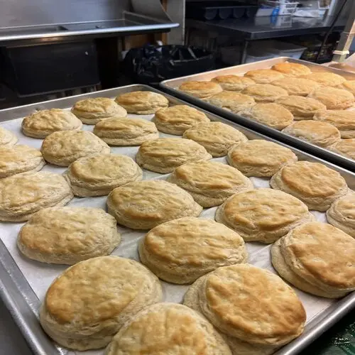
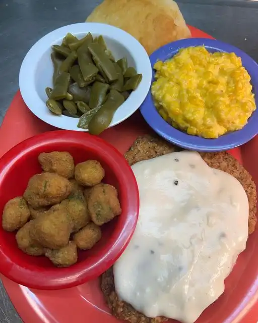
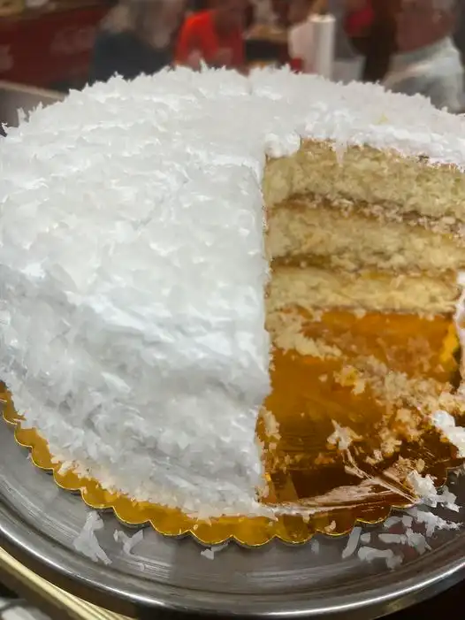

Keithsburg has many family country favorite menu options for everyone!

Don't miss out on our country style breakfast! We open the doors at 6:00am ready to serve you with a smile! Breakfast to include Hot Biscuits, Bacon, Sausage, Omelettes and Eggs any style!

Hot veggiess served Tuesday-Friday and Sunday! Veggies include Cucumber and tomato salad, Potato Salad, Sliced tomatoes, Sliced Onions, Pickled Beets,
Okra, Squash, Fried Mushrooms, Slaw, Macaroni Salad.

Homemake cakes available for dessert until supplies last!